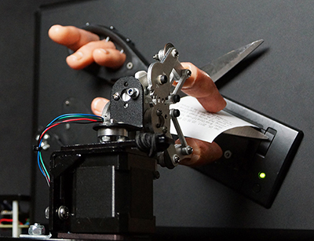
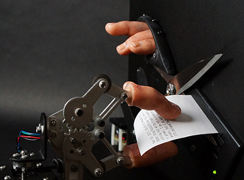
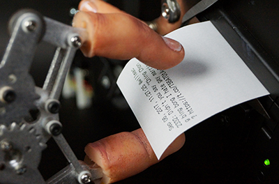
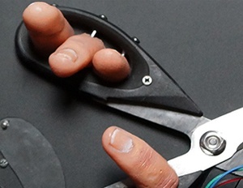
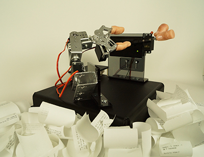
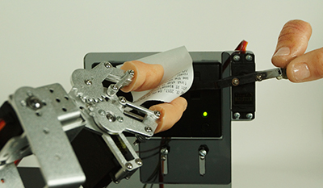
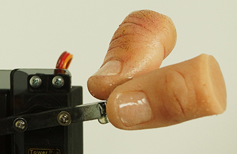
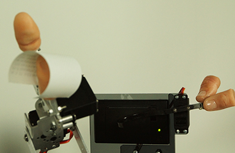
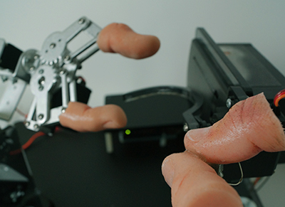
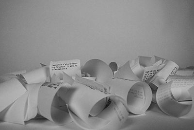

Hye Yeon Nam
Invisible Stream
2018, Critical Art Installation, Invisible Stream v.2
 
 
2017, Critical Art Installaion, Invisible Stream v.1
 
 
 
Invisible Stream uses a computational system to evoke understanding and spark a discussion of current racial stereotype issues. It explores the political implications of how freely racial discrimination is expressed on online platforms, where such discrimination can be easily hidden. It not only represents discrimination, but also voices the feelings of the victims and reveals the lack of conversation about this issue.
Invisible Stream receives data from the Twitter online platform, filters by keywords, and prints sentences that include derogatory racial terms on paper from a thermal printer. As sentences are printed, robotic hands with silicon fingers cut the thermal paper, leaving a pile of printouts on ground. As the fallen papers pile higher and higher, the audience can pick up the papers to read, take, or throw away. Amongst the pile of ignorant messages, one may find examples that seek to educate the speakers about the injured feelings and sensitivities of the victims.
The most important purpose of Invisible Stream is to raise awareness and start discussions, not for the audience to remain in frustration. By confronting the audience with a live stream of racism, the installation poses controversial questions about the origins, function, transmission, and lineage of prejudice. Since these robots resemble parts of the human body, yet are controlled by computational and mechanical systems, Invisible Stream reveals the different meaningful and reflective layers between human and machine.
Credit
Software Consultant: Zachary Berkowitz
Exhibition
2019 June, ISEA, Gwangju, Korea
2019 Feb, 404 International Festival of Art and Tech, Lowell, MA
2018 May, Boston CyberArts Gallery, Boston, MA
2017 July, Tri-tryagain, Brooklyn, NY
2017 May, CHI Art Gallery, Denver, CO